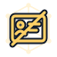
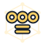

A
No identifier
A crossed identification card makes the missing IDs explicit.

Three options for each model. All use the existing soft graph background, a larger centered symbol and the current model colors. You can choose a different letter for each model.
 LOCAL
LOCAL
 CONGEST
The atlas now uses Anonymous C (Mask) and SUPPORTED A (Topology blueprint).
CONGEST
The atlas now uses Anonymous C (Mask) and SUPPORTED A (Topology blueprint).
No unique vertex identifiers.
A crossed identification card makes the missing IDs explicit.

Equal symbols suggest vertices without distinct identities.

A simple mask gives anonymity a recognizable silhouette.

A known support graph and preprocessing.